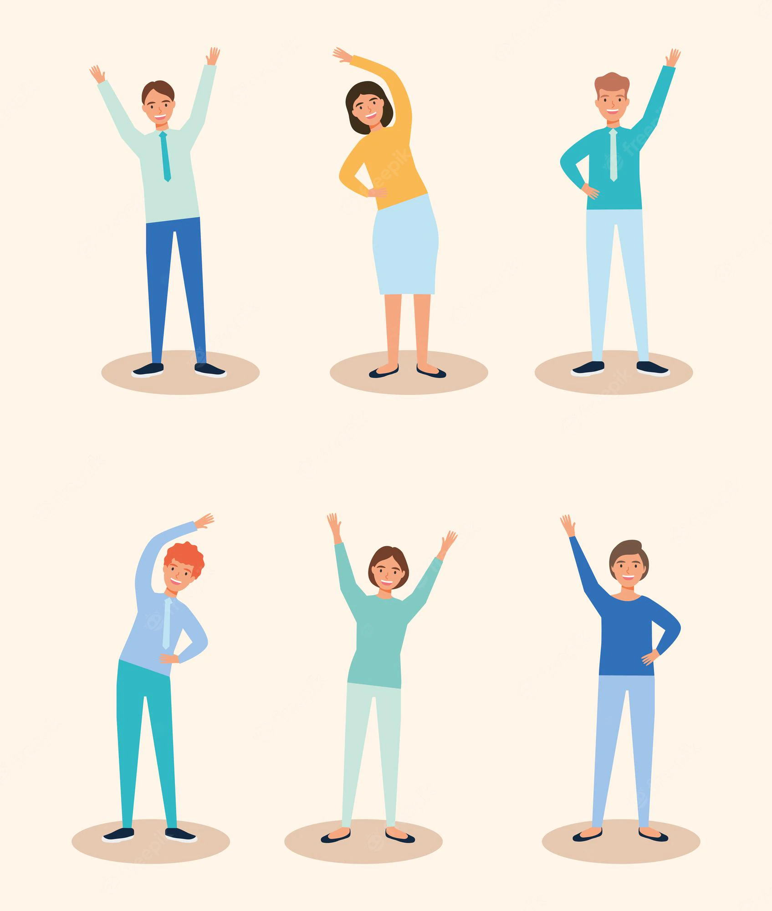
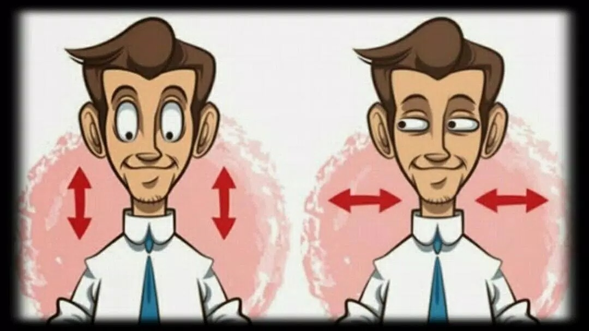

¿Cuales son los mejores ejercicios a la hora de una pausa activa?
En la vida en general debemos de tener una vida con poco o nulo sedentarismo, aun mas si trabajas en oficinas o
cualquier empleo que requiera estar en una mala posicion diariamente, por lo cuales
veremos diversos ejercicios que te ayudaran a evitar problemas fisicos. Esto es sencillo si dedicamos unos pocos
minutos al dia despues de largas seciones de trabajo al estiramiento y ejercicio. Ahora ¿Cúales
son estos ejercicios?

NOTA: Te recordamos que permanecer durante horas en la misma posición puede ocasionarte problemas
de salud. Por lo tanto, como lo sugiere el Hospital Universitario de Antioquia, es esencial que te tomes un
espacio durante el día para salir de la rutina de tu trabajo y realices pausas activas.
¿Asi que por que no empezamos?
Incorpora estos 10 sencillos ejercicios durante tu rutina laboral y eleva tu calidad de vida:
1. Empecemos por los ojos. Mira hacia el techo durante 6 segundos, devuelve la mirada al centro y haz lo mismo
mirando al piso.
2. Luego, flexiona tu cabeza como si intentaras que tu mentón alcanzara tu pecho. Permanece así por 10 segundos y
luego gira tu cabeza hacia ambos lados suavemente.

3. Vamos bien. Coloca tus manos sobre los hombros y haz movimientos como dibujando círculos grandes de forma lenta
hacia adelanta y atrás.
4. Relaja tus brazos a ambos costados de tu cuerpo y eleva tus hombros pretendiendo tocar tus orejas por 5 segundos.
Descansa y repite el movimiento.
5. ¡Sigamos! Flexiona tus codos y empuña tus manos para realizar círculos con tus muñecas pausadamente hacia afuera y
hacia adentro.
6. Ahora de pie y con tu espalda recta, lleva tu rodilla derecha hacia el pecho abrazándola con los dos brazos.
Quédate en esta posición 10 segundos y repite con la izquierda.
No pares. Coloca tus manos entrelazadas detrás de tu cabeza estirando los codos hacia atrás y sostén por 10
segundos.
7. ¡Relájate! Realiza movimientos circulares con tus tobillos y hacia ambos lados del pie.
Colócate de pie y dobla hacia atrás tu pierna izquierda tomando la punta del pie con tu mano izquierda en esa
posición semiflexionada. Sostén y repite con tu otra pierna.
Por último, en una posición erguida y con tus rodillas semiflexionadas, lleva tus manos a la cintura y empuja tu
cadera hacia adelante. Luego de 5 segundos, vuelve al centro y haz lo mismo hacia atrás.